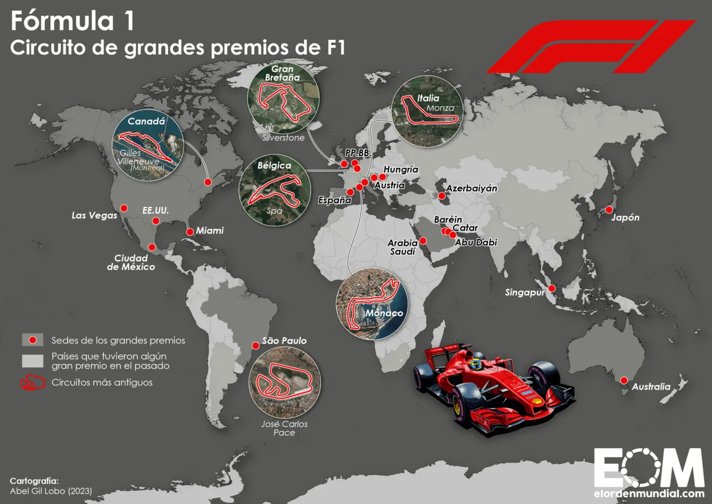

CIRCUITOS DE F1

- un total, de 77 circuitos diferentes han albergado carreras del Campeonato Mundial. El primero en hacerlo fue Silverstone, donde se llevó a cabo la primera carrera, el Gran Premio de Gran Bretaña de 1950.A lo largo de la historia de F1 se han usado diferentes trazados para los circuitos, incluyendo algunos construidos para tal fin, denominados autódromos, como el circuito de Suzuka, y los circuitos callejeros urbanos, como el Circuito de Mónaco. pagina principal
- Circuito de Spa-Francorchamps (Bélgica)
- Circuito de Monza (Italia)
- Circuito de Suzuka (Japón)
- Circuito de Sakhir (Bahrein)
- Circuito de Melbourne (Australia)
- Circuito de Gilles Villeneuve (Canada)
- Circuito de Mónaco (Mónaco)
- Circuito de Istanbul Park (Estambul)
- Circuito de Sepang (Malasia)
- Circuito de Interlagos (Brasil)
- Circuito de Shanghai (China)
- Circuito de Fuji (Japón)
- Circuito de Montmeló (España)
- Valencia Street Circuit (GP de Europa)
- Circuito de Silverstone (Gran Bretaña)
- Circuito de Hockenheim (Alemania)
- Circuito de Hungaroring (Hungría)
- Circuito de Marina Bay (Singapur)
- Circuito Internacional de Corea
- Circuito Yas Marina (Abu Dhabi)
- Circuito de Nurburgring (Alemania)
- Circuito de Spielberg (Austria)
- Circuito de Sochi (Rusia)
|